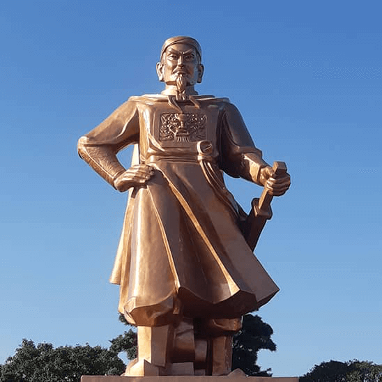

Lê Hoàn (941 - 1005), tức Lê Đại Hành, là vị hoàng đế sáng lập nhà Tiền Lê, có công lớn trong việc bảo vệ nền độc lập của Đại Cồ Việt và đánh bại quân Tống xâm lược năm 981. Theo nhiều sử liệu, ông quê ở Ái Châu, vùng đất tương ứng với khu vực Thanh Hóa ngày nay. Thuở nhỏ mồ côi cha mẹ, được một viên quan địa phương là Lê Mịch nhận nuôi. Lớn lên, ông theo nghiệp võ và trở thành một vị tướng có tài. Lê Hoàn sống trong giai đoạn đất nước có nhiều biến động sau khi Ngô Quyền qua đời, đặc biệt là thời kỳ loạn 12 sứ quân và quá trình hình thành nhà nước Đại Cồ Việt.
Lê Hoàn được sử sách và truyền thống địa phương gắn với vùng đất này. Việc một nhân vật sau này trở thành hoàng đế xuất thân từ Ái Châu cho thấy vai trò đáng kể của Thanh Hóa trong đời sống chính trị, quân sự của Đại Cồ Việt. Ái Châu là một vùng đất có vị trí quan trọng trong lịch sử Việt Nam thời kỳ đầu độc lập, tương ứng với phần lớn khu vực Thanh Hóa ngày nay. Vùng đất Thanh Hóa cũng là nơi có truyền thống lâu đời về văn hóa, quân sự và sản sinh nhiều nhân vật quan trọng trong lịch sử dân tộc.
Trước khi trở thành hoàng đế, Lê Hoàn từng phục vụ dưới triều Đinh Tiên Hoàng. Ông được giao chức Thập đạo tướng quân, giữ vai trò quan trọng trong việc chỉ huy quân đội. Sau khi Đinh Tiên Hoàng và Nam Việt Vương Đinh Liễn qua đời năm 979, đất nước rơi vào tình trạng khó khăn. Lê Hoàn trở thành một trong những người giữ vai trò quan trọng trong việc bảo vệ triều đình và ổn định tình hình.
Năm 980, trước tình hình đất nước đứng trước nguy cơ xâm lược, Lê Hoàn lên ngôi Hoàng đế, mở đầu nhà Tiền Lê. Sự kiện này đánh dấu một giai đoạn mới của Đại Cồ Việt. Lê Hoàn tập trung củng cố chính quyền, xây dựng lực lượng và duy trì nền độc lập mà đất nước đã giành được.
Lê Hoàn là một trong những nhân vật quan trọng của lịch sử Việt Nam thế kỷ X, đặc biệt với vai trò sáng lập nhà Tiền Lê và củng cố nền độc lập của Đại Cồ Việt. Đối với Thanh Hóa, Lê Hoàn là một nhân vật tiêu biểu gắn với Ái Châu - vùng đất giàu truyền thống lịch sử, góp phần làm nổi bật vai trò của xứ Thanh trong tiến trình lịch sử dân tộc.
Lê Đại Hành

Tượng đài Lê Hoàn
Thời gian trị vì
Tháng 7 năm 980 - 18 tháng 4 năm 1005
Đinh Toàn
Lê Long Đĩnh
Thông tin chung
10 tháng 8, 941 Tĩnh Hải quân
18 tháng 4, 1005 (63 tuổi) Hoa Lư, Đại Cồ Việt
Trường Yên (Hoa Lư)
Đại Cồ Việt (Việt Nam)
Kinh
Lê Hoàn (黎桓)
Minh Càn Ứng Vận Thần Vũ Thăng Bình Chí Nhân Quảng Hiếu Hoàng đế (明乾應運神武昇平至仁廣孝皇帝)
Đại Hành Hoàng đế (大行皇帝)
Không có
Nhà Tiền Lê
Lê Mịch
Đặng Thị Sen